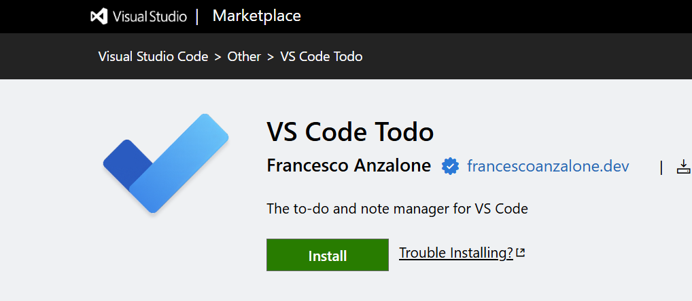

TypeScript
Node.js
Angular
Cloudflare Workers
MCP
VS Code Todo (Extension + PWA)
A todo and notes extension for VS Code (9,000+ installs) and Plans, a PWA that opens the same lists on a phone. One TypeScript monorepo: an Angular app built twice (webview and PWA), a shared sync engine that merges edits through a GitHub Gist with a three-way merge, a Cloudflare Worker that relays GitHub's OAuth device flow for the PWA, and a local MCP server that lets AI agents read and update the lists.
Write-ups: